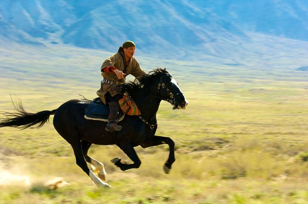
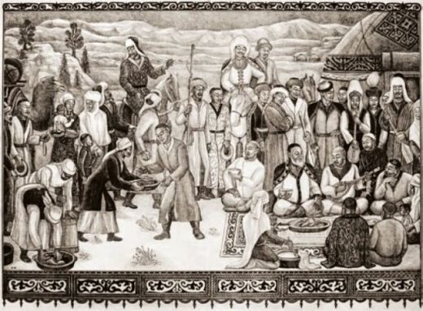

Ілияс Жансүгіровтың «Құлагер» поэмасы қазақ халқының тұрмыс-салт дәстүрлерін тереңінен сипаттайды. Бұл шығармада бәйге, ас беру, жыраулар дәстүрі, жылқы культі сияқты ұлттық құндылықтар кеңінен көрініс тапқан.
Қазақ халқының өмірінде бәйге үлкен рөл атқарған. «Құлагер» поэмасында Сағынайдың асы кезінде ұйымдастырылған бәйге суреттеледі. Бұл жарыс тек спорт емес, сонымен бірге батылдық пен шеберліктің көрінісі болды.
Аруақты құрметтеу мақсатында өткізілетін ас беру – қазақтың маңызды дәстүрлерінің бірі. Сағынайдың асы кең көлемде ұйымдастырылып, онда елдің игі жақсылары жиналады. Бұл дәстүр халықтың бірлігін көрсетеді.
«Құлагер» поэмасы – қазақ халқының рухани қазынасы. Онда ата-бабамыздың өмір салты, дәстүрлері, және мәдениеті көркем тілмен суреттелген.